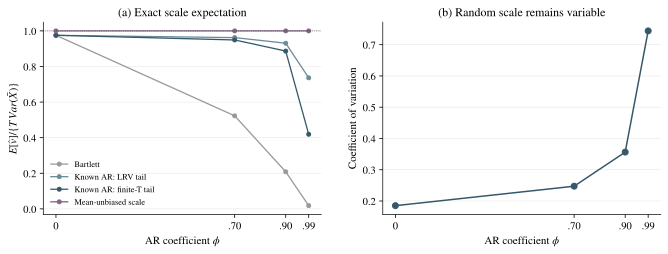
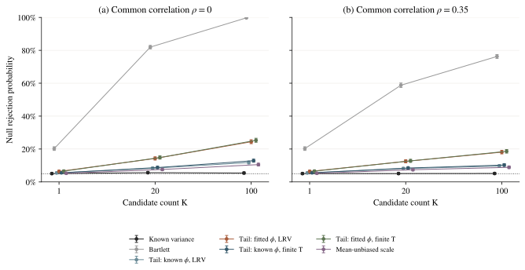
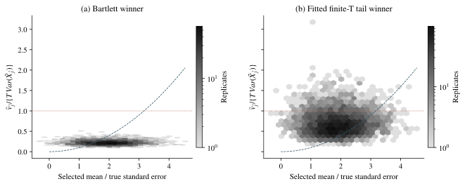

有限样本尺度、尾部修正与策略筛选
固定协议的机制诊断：每格 5000 轮。全部方法使用已知相关矩阵的 Gaussian 最大值临界值；只有真实方差参照拥有相应的精确尺度。
这里复现 Liu–Chan 的固定带宽 AR(1) 尾部修正公式，并将总体截断、有限样本中心化、参数拟合与候选筛选分开诊断。修正估计量的期望，不等于校准随机分母统计量的尾部。
本报告没有使用未知参数的可实施联合临界值，未复现作者的自动带宽实验，也未建立新方法的普遍有效性。已知参数与均值无偏参照用于辨认误差来源。
T=512、φ=0.9、K=100、ρ=0 时，即使使用真实参数使每列尺度的期望精确无偏，误报率仍为 10.52%（点态 95% 区间 9.70–11.40%）。全列平均尺度比为 1.00015，被选列的平均尺度比为 0.87302。完整结果解读。
1. 偏差修正与随机尺度



2. 策略筛选后的误报



3. 被选候选的尺度



完整零均值结果
数值下方为点态 95% Monte Carlo 区间；行标题可下载该格点的逐轮记录。成对拒绝差异另存，未经多重比较调整，不用于确认性显著声明。
| 生成模型 | 真实方差 | Bartlett | 已知 φ·LRV | 估计 φ·LRV | 已知 φ·有限 T | 估计 φ·有限 T | 均值无偏参照 |
|---|---|---|---|---|---|---|---|
| T=200, φ=0.0000 K=1, ρ=0.0 | 4.64%4.09–5.26 | 5.08%4.51–5.72 | 5.08%4.51–5.72 | 5.08%4.51–5.72 | 5.08%4.51–5.72 | 5.08%4.51–5.72 | 4.74%4.18–5.36 |
| T=200, φ=0.7000 K=1, ρ=0.0 | 4.50%3.96–5.11 | 11.86%10.99–12.79 | 5.62%5.02–6.29 | 6.12%5.49–6.82 | 5.72%5.11–6.40 | 6.18%5.55–6.88 | 5.24%4.66–5.89 |
| T=200, φ=0.9000 K=1, ρ=0.0 | 4.62%4.07–5.24 | 23.02%21.87–24.21 | 5.86%5.24–6.55 | 7.76%7.05–8.53 | 6.32%5.68–7.03 | 8.28%7.55–9.08 | 5.34%4.75–6.00 |
| T=200, φ=0.9900 K=1, ρ=0.0 | 4.96%4.39–5.60 | 41.56%40.20–42.93 | 11.26%10.41–12.17 | 23.68%22.52–24.88 | 17.10%16.08–18.17 | 25.42%24.23–26.65 | 8.40%7.66–9.20 |
| T=512, φ=0.9000 K=1, ρ=0.0 | 5.06%4.49–5.70 | 20.26%19.17–21.40 | 5.46%4.86–6.12 | 6.38%5.74–7.09 | 5.56%4.96–6.23 | 6.56%5.91–7.28 | 5.28%4.69–5.93 |
| T=512, φ=0.9000 K=20, ρ=0.0 | 5.62%5.02–6.29 | 81.96%80.87–83.00 | 8.32%7.59–9.12 | 14.26%13.32–15.26 | 8.74%7.99–9.55 | 14.82%13.86–15.83 | 7.58%6.88–8.35 |
| T=512, φ=0.9000 K=100, ρ=0.0 | 5.40%4.81–6.06 | 99.74%99.56–99.85 | 11.78%10.92–12.70 | 24.42%23.25–25.63 | 12.90%12.00–13.86 | 25.30%24.11–26.52 | 10.52%9.70–11.40 |
| T=512, φ=0.9000 K=20, ρ=0.35 | 5.08%4.51–5.72 | 58.78%57.41–60.14 | 8.10%7.38–8.89 | 12.50%11.61–13.45 | 8.46%7.72–9.26 | 12.80%11.90–13.75 | 7.42%6.73–8.18 |
| T=512, φ=0.9000 K=100, ρ=0.35 | 5.12%4.54–5.77 | 76.28%75.08–77.44 | 9.70%8.91–10.55 | 18.10%17.06–19.19 | 10.24%9.43–11.11 | 18.60%17.55–19.70 | 8.88%8.12–9.70 |
| T=256, φ=0.9375 K=20, ρ=0.35 | 4.54%4.00–5.15 | 76.84%75.65–77.99 | 12.58%11.69–13.53 | 27.64%26.42–28.90 | 14.52%13.57–15.52 | 28.44%27.21–29.71 | 10.22%9.41–11.09 |
| T=1024, φ=0.9688 K=20, ρ=0.35 | 5.12%4.54–5.77 | 80.94%79.83–82.00 | 8.76%8.01–9.58 | 17.30%16.28–18.37 | 9.60%8.81–10.45 | 17.96%16.92–19.05 | 7.94%7.22–8.72 |
| T=2048, φ=0.9779 K=20, ρ=0.35 | 4.86%4.30–5.49 | 83.64%82.59–84.64 | 7.38%6.69–8.14 | 13.10%12.19–14.06 | 7.94%7.22–8.72 | 13.74%12.81–14.72 | 7.00%6.33–7.74 |